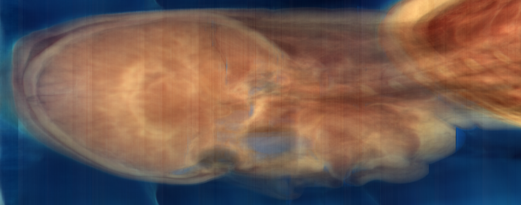
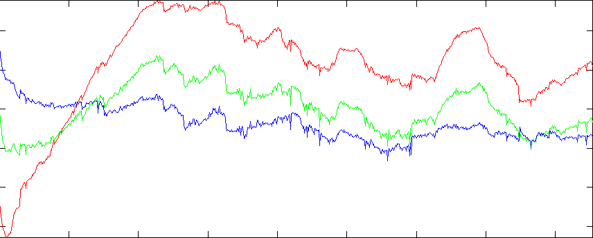
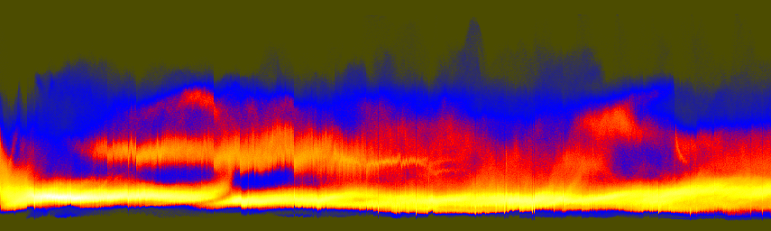
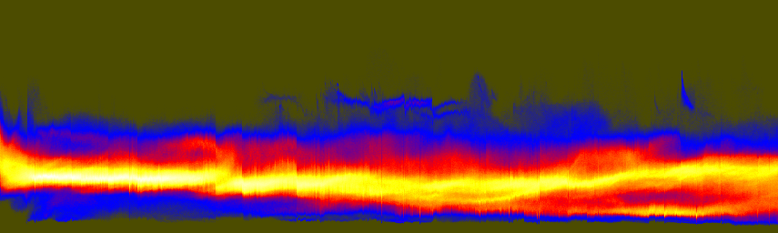
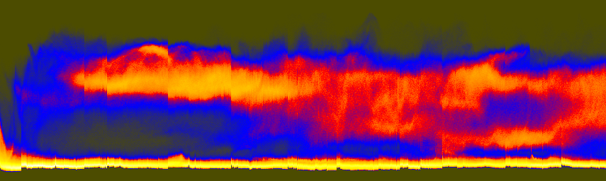

|

|

| |||
| teem | / | nrrd | / |
Visible Female |
Inter-slice Brightness Problem |
The real problem with the Visible Human Female color data lies in how the brightness changes suddenly from slice to slice. This problem was previously described in a paper by Máquez and Schmitt presented at the 1996 Visible Human Project Conference. That work was focused on the lungs of the Visible Human Male color data, but the problem is the same as described here. Those authors also described a method for correcting the problem. My pages here serve more to precisely visualize the problem as it occurs in the head of the Visible Human Female.
The easiest way to see the brightness problem is with simple summed projections, using the half-size head images created in an earlier step:
unu join -i *.headsm.ppm -a 3 \ | unu project -a 2 -m sum | unu swap -a 1 2 -o xsum.nrrd unu join -i *.headsm.ppm -a 3 \ | unu project -a 1 -m sum | unu swap -a 1 2 -o ysum.nrrd unu quantize -i xsum.nrrd -b 8 | unu save -f pnm | topng doc/ysum.png unu quantize -i ysum.nrrd -b 8 | unu save -f pnm | topng doc/xsum.png

xsum.png: Summation along X: Y versus Z

Graph of R,G,B sums (see below)
The problem is the vertical bands in the RGB projection images. The fact that these bands appear in both images (regardless of projection direction), and that they appear uniformly in the images (regardless of the non-projected position) suggest that they are not a property of the tissue or the background, but of the image intensity itself. We can also graph the sum of component values over the whole slice. Nrrd doesn't (yet) have any facility for graphing, so we'll start with nrrd ...
unu project -i xsum.nrrd -a 2 -m sum -o colsum.txt
>> rgb = dlmread('colsum.txt');
>> d = 0:1:854;
>> plot(d,rgb(:,1),'r', d,rgb(:,2),'g', d,rgb(:,3),'b')
>> axis tight
Because the variations seem to apply to all colors, we can get another kind of representation which starts with summing the three color components together, and then histogramming them on a per-slice basis:
unu join -i *.headsm.ppm -a 3 | unu project -a 0 -m sum \ | unu reshape -s 92338 855 \ | unu histax -a 0 -b 324 -t float -o histax.nrrd cat > colormap.txt 0.3 0.3 0 0 0 1 1 0 0 1 1 0 1 1 1 (Ctrl-D) unu heq -i histax.nrrd -b 1024 -s 2 -a 0.7 \ | unu swap -a 0 1 | unu flip -a 1 \ | unu rmap -m colormap.txt | unu quantize -b 8 -o histax.ppm convert histax.ppm doc/histax.png
ysum.png (repeated for comparison)
These histograms are a little hard to understand at first. As arranged here, every vertical scanling corresponds to one Z slice. The bottom of the histogram represents low values, the top represents high values. Bright regions indicate where (both in terms of slice and in terms grayscale value) there were the most pixels. When the slices suddenly get dark near the eyes, there is a jog downward in the upper band of the histogram. The isolated dark slices are visible as small spikes along the bottom edge of the histogram. The value in looking at this histogram, as opposed to simply looking at the R,G,B sum plots (above), is that it provides a sense of how the whole distribution of values is changing.
You can make a color version of this histogram too, by not initially summing the color components, so that the red, green, and blue channels of the axis histogram portray positional variations in the corresponding color component. The result may have more aesthetic value than informational value:
unu join -i *.headsm.ppm -a 3 | unu reshape -s 3 92338 855 \ | unu histax -a 0 -b 256 -t float -o histaxcol.nrrd unu heq -i histaxcol.nrrd -b 1024 -s 2 -a 0.7 \ | unu swap -a 1 2 | unu flip -a 2 \ | unu quantize -b 8 | topng doc/histaxcol.png
A better way to get a component-specific
visualization of how the brightness variations is to simply do axis
histogramming for the red, green, and blue channels in isolation:


These component-specific axis histograms tell a great deal:
unu slice -i histaxcol.nrrd -a 0 -p 0 | unu heq -b 1024 -s 2 -a 0.7 \
| unu swap -a 0 1 | unu flip -a 1 | unu rmap -m colormap.txt \
| unu quantize -b 8 -o histaxR.ppm
unu slice -i histaxcol.nrrd -a 0 -p 1 | unu heq -b 1024 -s 2 -a 0.7 \
| unu swap -a 0 1 | unu flip -a 1 | unu rmap -m colormap.txt \
| unu quantize -b 8 -o histaxG.ppm
unu slice -i histaxcol.nrrd -a 0 -p 2 | unu heq -b 1024 -s 2 -a 0.7 \
| unu swap -a 0 1 | unu flip -a 1 | unu rmap -m colormap.txt \
| unu quantize -b 8 -o histaxB.ppm
convert histaxR.ppm doc/histaxR.png
convert histaxG.ppm doc/histaxG.png
convert histaxB.ppm doc/histaxB.png

histaxR.png
histaxG.png
histaxB.png
{kind=link}
{kind=link}
{kind=link}